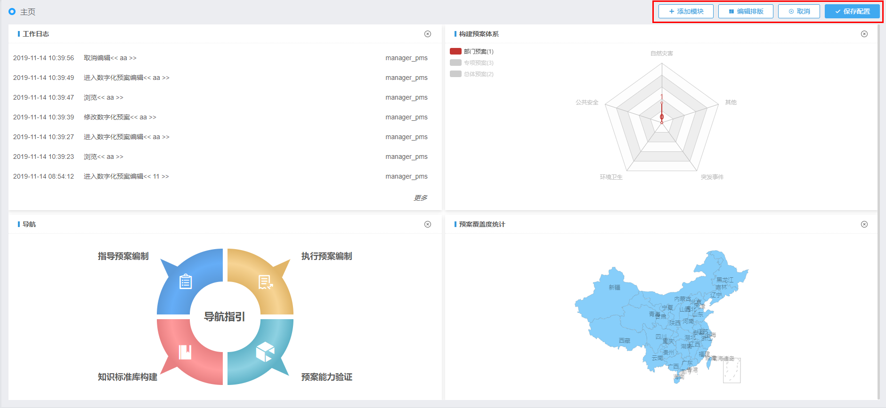
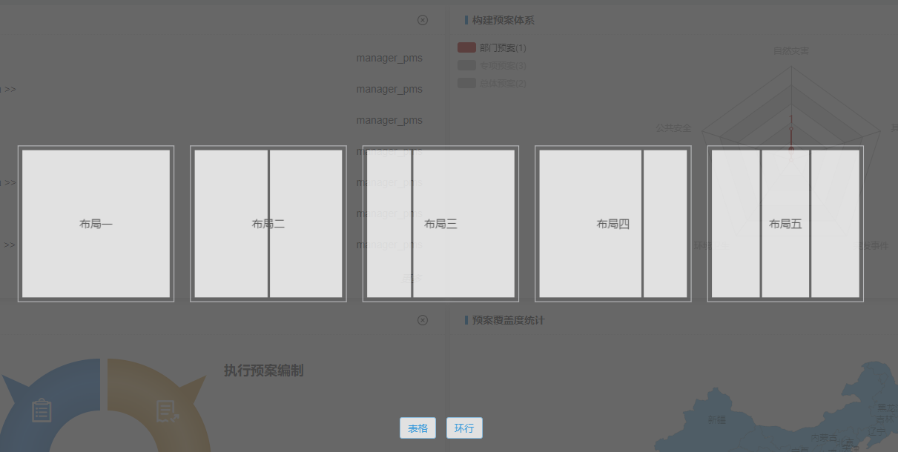
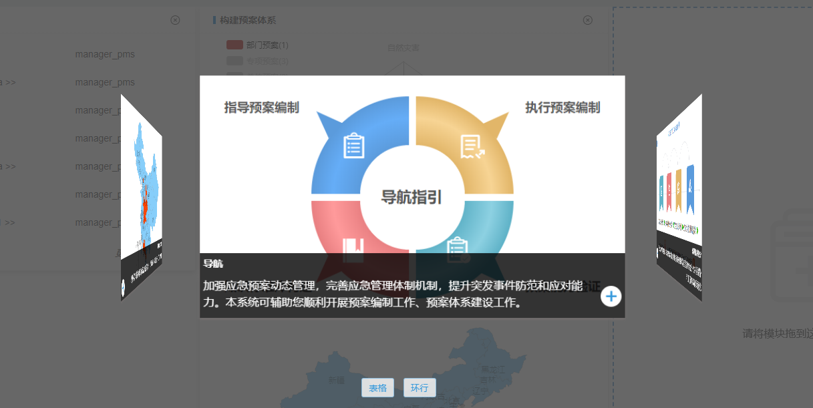

主页配置
进入系统后，默认进入主页界面。若系统处于其他菜单，可通过单击“主页”菜单，进入主页页面。
您可以自定义主页展示布局以及展示内容。具体操作步骤如下：
| 1. | 在“主页”页面，单击页面右上方按钮。 界面右上方展示出配置操作相关按钮，如Fig 4所示。
Fig 4 主页配置

|
| 2. | 单击〖编辑排版〗按钮，弹出“排版选择”页面，如Fig 5所示。 Fig 5 选择排版

用户可以通过依次单击〖表格〗以及〖环行〗按钮，切换展示方式。系统默认以表格形式展示布局模板。当模块处于环行展示时，可单击鼠标拖动切换内容。
|
| 3. | 在布局模板中，单击选中所需要的模板类型。 选择之后，主页按照该模板布局进行展示。
|
| 4. | 单击页面右上角〖添加模块〗按钮，进入模块选择页面。如Fig 6 选择模块所示。 Fig 6 选择模块

|
| 5. | 查看并选定展示模块，单击该模块右下角【 若模块右下角图标为
|
| 6. | 单击〖保存配置〗按钮，保存主页配置设置。 |
| • | 系统初次配置时，选择排版模板后，各模块内容为空，用户需要手动添加模块内容。 |
| • | 若用户已配置有展示内容，可以通过单击按钮，删除已存在的模块内容，再为该模块添加新的展示内容。 |